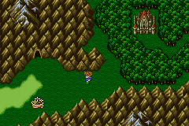

Story Line (3)
อารยธรรมโบราณ
Lonka Ruins
ภายในยานเหาะ คืออารยธรรม Lonka ที่หายสาปสูญไปนั่นเอง
ภายในยานเหาะจะมี Learning Magic ให้เก็บ 2 เวทย์ คือ
Blowfish จาก Lamia ต้องใช้คำสั่ง Control
เพื่อสั่งให้ Lamia ใช้เวทย์นี้
Whirlwind จาก Whirl Demon ต้องใช้คำสั่ง
Control เพื่อสั่งให้ Whirl Demon ใช้เวทย์นี้
ชั้นในสุดจะเจอกษัตริย์ Tycoon กำลังจะต่อสู้กับศัตรู พวก Butz จึงเข้าไปช่วย
Boss : Archae Avis
HP : 7,500
Weakness : Wind
* Note : Archae Avis มี Level เริ่มแรก 21 แต่จะเพิ่มขึ้นเรื่อยๆ
จนกลายเป็น Level 24
อีกทั้ง เมื่อ Level เพิ่มขึ้น จุดอ่อน ก็จะเปลี่ยนไปด้วย
เมื่อปราบ Archae Avis ได้แล้ว มันจะฟื้นคืนชีพขึ้นมาอีกครั้ง
Boss : Archae Avis
Level 20
HP : 3,000
เมื่อ Archae Avis ฟื้นขึ้นมาอีกครั้ง จะมี Level 20 ให้ใช้ L5
Doom จัดการ
เมื่อปราบได้ เข้าไปในห้อง Crystal จะพบกษัตริย์ Tycoon
แต่เขาถูกพลังชั่วร้ายควบคุมอยู่
ในขณะเดียวกัน ได้มีอุกาบาตอีกลูกตกลงมา
ได้มีเด็กผู้หญิงทำลายกำแพงเข้ามา และโจมตีใส่กษัตริย์ Tycoon
เด็กผู้หญิงคนนั้นคือ Cara หลานสาวของ Galuf
เมื่อ Galuf เห็น Cara ทำให้ความทรงจำของเขากลับมา
และในตอนนั้น Crystal ดิน ก็แตก ทำให้ผนึกที่กักขัง Exdeath ถูกปลดปล่อย
Exdeath เข้ามา และใช้พลังทำให้เศษ Crystal ที่แตกเข้าโจมตีพวก Butz
แต่กษัตริย์ Tycoon ได้เข้าขวางไว้ และสละชีวิตเพื่อทำลายพลังชั่วร้ายของ
Crystal
Get 4 jobs
Samurai
Dragoon
Dancer
Chemist
Galuf เล่าให้ฟังว่าเมื่อ 30 ปีที่แล้ว เขาและเพื่อนอีก 3 คน
ได้ร่วมมือกันปราบ Exdeath และปิดผนึกไว้
แต่ตอนนี้ Exdeath กลับฟื้นคืนชีพขึ้นมาอีกครั้ง
ทำให้ Galuf จำเป็นต้องเดินทางกลับไปยังโลกของเขา พร้อมกับ Cara
เพื่อหยุดยั้ง Exdeath ที่มีจุดมุ่งหมายจะไปโจมตีโลกของ Galuf
แล้ว Galuf กับ Cara ก็เดินทางจากไปโดยใช้อุกาบาตที่ยังมีพลังเหลือ
พวก Butz เสียใจมากที่ไม่สามารถเดินทางไปด้วยได้
เพราะอุกาบาตมีพลังที่จะเดินทางเพียงเที่ยวเดียวเท่านั้น
พวก Butz จึงกลับไปถาม Cid ว่ามีทางที่จะไปช่วย Galuf ได้หรือไม่
แต่เมื่อกลับไปฐานเรือเหาะใต้น้ำ กลับไม่พบใครเลย
เจอเพียงหนังสือของ Cid วางทิ้งไว้
บอกว่า เขาต้องถอด Adamantium ออก เพราะมันอาจเกิดอันตราย
เขาจึงนำมันกลับไปไว้ที่เดิม
ดังนั้น พวก Butz จึงมุ่งหน้าไปยังอุกาบาตที่เคยเอา Adamantium มา
นั่นคือ อุกาบาตใกล้กับปราสาท Tycoon
Meteor at Tycoon
ที่นั่น Cid ได้นำ Adamantium กลับไปไว้ในอุกาบาต
แต่กลับถูกที่วาร์ป ดูดพลังของ Adamantium
Lenna จึงเสนอความคิดว่า ถ้าให้อุกาบาต ดูดพลังของ Adamantium จนเต็ม
จะทำให้สามารถใช้ อุกาบาตเพื่อไปยังโลกของ Galuf ได้
แต่ Adamantium เพียงอันเดียว ไม่สามารถเพิ่มพลังให้อุกาบาติได้เต็ม
ต้องนำ Adamantium อีก 3 อันจากอุกาบาตที่เหลือมาใช้ด้วย
ทั้งหมดจึงมุ่งหน้าไปยังอุกาบาตทั้ง 3 ก้อนที่ตกลงมา
Meteor at Worus
ที่นี่จะเจอศัตรูบุกเข้าจู่โจม
Boss : Puroboros

HP : 1,500 (x6)
* Note : ต้องจัดการให้ได้พร้อมกันทั้ง 6 ตัว
เพราะถ้าหากฆ่ามันตายมันจะใช้ Life 2 กับพวกมันที่ตายไปแล้วทุกตัว
วิธีปราบง่ายๆ ให้ใช้ท่า GilToss ของอาชีพ Samurai (ขว้างเหรียญ)
Meteor at Karnak
ที่นี่จะมีศัตรูเฝ้าอยู่ 1 ตัว คือ
Boss : Tatan
HP : 2,500
เมื่อปราบได้ จะได้รับ Titan เป็น
Summon Magic
Meteor at Ruins
ที่นี่ Cid และ Mid จะโดนศัตรูทำร้าย (อีกแล้ว : P)
Boss : Chim. Brain
HP : 3,300
เมื่อเพิ่มพลังให้แก่ Meteor ทั้ง 4 แล้ว
พลังของ Adamantium จะไปรวมกันที่จุดกึ่งกลาง ณ ตำแหน่งดังรูป
เมื่อเข้าไปจะวาร์ปไปยังโลกของ Galuf
* Note : เมื่อวาร์ปไป จะไม่สามารถกลับมายังโลกแรกได้อีกแล้ว
ควรเก็บสิ่งของที่จำเป็นให้หมดก่อนที่จะไป ดังนี้
- Summon Magic Shiva
จากปราสาท Walz
- Time Magic Drag
(Speed) จากปราสาท Walz
- สิ่งของจากปราสาท Tycoon
- White Magic Size (Mini) จากฐานเรือเหาะใต้น้ำ
- Summon Magic Ramuh
จากป่าใกล้หมู่บ้าน Istory
- Black Magic Toad
จากหมู่บ้าน Istory
- Love Song
จากหมู่บ้าน Istory
- Vitality
Song (Life Song) (Str. Song) จากหมู่บ้าน Crescent
- Charm Song
(Tempt Song) จากหมู่บ้าน Lix
- ซื้อสินค้าจากหมู่บ้าน Lix ที่มีราคาถูกกว่าปรกติตุนไว้เยอะๆ
- ดูความหลังของ Butz จากหมู่บ้าน Lix ทั้งหมดแล้ว
- เก็บ Learning Magic ได้ครบหมดแล้ว
- เล่น Piano ครบทั้ง 4 เครื่องแล้ว
South Island
ด้าบล่างของแผนที่จะมีเกาะเรียงกันอยู่เป็นรูปครึ่งวงกลม
เกาะด้านล่างสุดจะมีศัตรูที่น่ากลัวอยู่คือ
Prototype
HP : 5,000
Exp : 500
ABP : 5
Prototype มีพลังป้องกันสูงมาก
อีกทั้งยังมีการโจมตีที่รุนแรง ยากที่จะเอาชนะได้
วิธีการเอาชนะง่ายๆ ก็คือ ใช้ความสามารถ Control ของอาชีพ Mediator
จากนั้นก็สั่งให้มัน Exploder ตัวเอง
Jacole Cave
ล่องเรือมาทางทิศตะวันตกเฉียงใต้ของแผนที่ ใกล้ๆ กับหมู่บ้าน Jacole จะเจอถ้ำ
Jacole

ภายในถ้ำมีสมบัติอยู่ 3 ชิ้น คือ Tent, Shuriken, Thunder Whip
แต่ในถ้ำมีศัตรูที่น่ากลัวอยู่ตัวหนึ่งก็คือ
Skull Eater
HP : 1
แม้จะเห็นว่ามี HP แค่ 1 เท่านั้น แต่พลังป้องกันสูงมาก
อีกทั้งยังโจมตีได้อย่างรุนแรงอีกด้วย
เมื่อรวบรวมสิ่งของจำเป็นได้ครบหมดแล้ว ก็วาร์ปไปยังโลกของ Galuf ได้เลย
Next Story
4